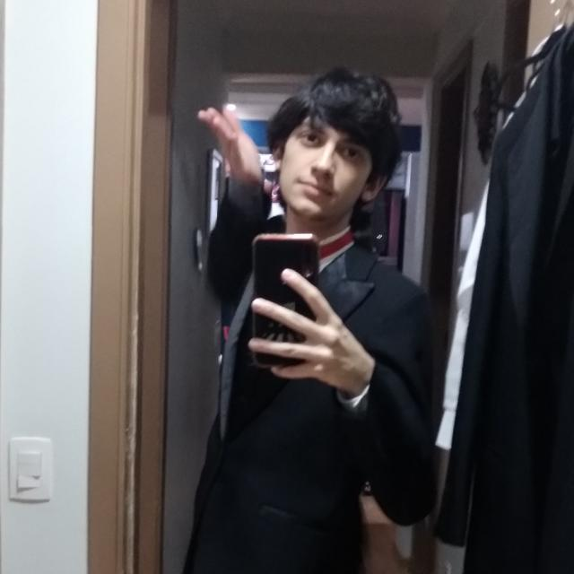

Quem sou eu?
Sobre Mim
Oi, eu sou o Gustavo, tenho 18 anos de idade, a foto ao lado foi do dia da minha formação em Técnico em Comunicação Visual, escritor e fã de quadrinhos e mangás. Gosto também de ler e jogar videogames.Qualificações Profissionais
Técnico em Comunicação Visual pela Etec Carlos de Campos, fazendo graduação em Cinema e Audiovisual pela Escola Superior de Propaganda e Marketing - ESPM.Estudos
Estudei do prézinho até o terceiro ano do ensino fundamental no Colégio Bom Jesus, no Pari.Do quarto ao nono ano estudei no Colégio Saint Clair.
Fiz o ensino médio técnico na Etec Carlos de Campos.
Estudo a graduação na Escola Superior de Propaganda e Marketing - ESPM.
Hard Skills
Photoshop e Illustrator avançado, InDesign intermediário, Premiere Pro iniciante.Idiomas: inglês intermediário e espanhol iniciante.